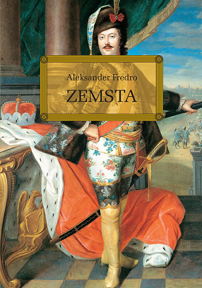

|  |
|
| Opis:
Zemsta to komedia Aleksandra Fredry, która powstała na podstawie historii poprzednich właścicieli zamku, Firlejów i Skotnickich. Akcja utworu rozgrywa się w zamku, którego lokalizacja nie jest podana, a czas akcji wskazuje na ostatnie dwudziestolecie XVIII wieku lub początek XIX wieku. Komedia ta jest nadal śmieszna i dotyka głębokich tematów związanych z relacjami międzyludzkimi. Przedstawia konflikt pomiędzy mściwym awanturnikiem Cześnikiem a młodszym pokoleniem reprezentowanym przez Wacława i Klarę. Motywy zemsty, miłości, kłótni i muru odgrywają ważną rolę w utworze, a bohaterowie ukazują zmierzch kultury szlacheckiej. Cześnik jest porywczy i apodyktyczny, podczas gdy Milczek jest pokorny i cichy. |
|